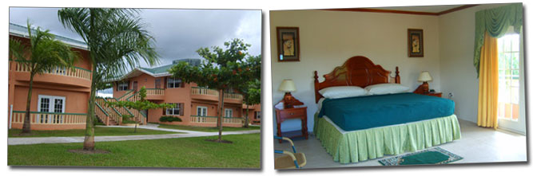

When you need tranquility and a real getaway, check into Splashmins Hotels! Cuddle in the finest linens or sit and enjoy a spectacular sunset from the comfort of your room’s patio.
Our hotels are located just beyond the football field and features 24 innovatively designed air conditioned villas. These extravagant villas are all self-contained and are built to provide refined comfort in a tranquil environment.
All rooms share a standard design and are equipped with hot and cold showers, scented soaps and shampoos to sooth you after your fun filled day at the park, refrigerator with complementary beverages, queen or king sized beds and more…
The combination of these luxuriously designed rooms, the tranquil environment and friendly customer service will add to your unforgettable stay.
